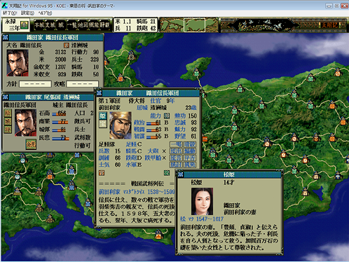
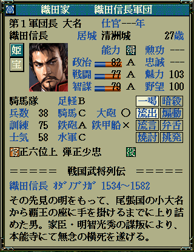
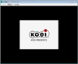

記述前段階 びぼーろく http://www.microsoft.com/download/en/confirmation.aspx?id=6191 vids/wmv3 圧縮解除 うんぬん
グラフィックを中心とした見た目の改善
-
武将の顔グラを最新ベースに出来ないか？[易]
｢フルカラー顔キット｣をあてることで解決できます。

-
フォントが戦国ゲームとして違和感がある上、何やら見苦しい
何とかならないか？[易]
｢フォントの変更｣の項目にて説明しています。
又、当サイトでは、｢天翔 明朝｣を利用した変更方法をお勧めします。

-
各種ムービー、特にオープニングムービーを差し替えたい
何とかならないか？[普]
比較的簡単に差し替えることが可能です。
まずは、イメージをつかむため、差し替えた場合のイメージを見てみましょう。
以下は管理人自身が普段から利用している天翔記のオープニングムービーとなります。
┌ オープニングムービー差し替えイメージムービー

なお、自分自身でムービー自体を編集したいという場合は、こちらの～高難度編～となります。